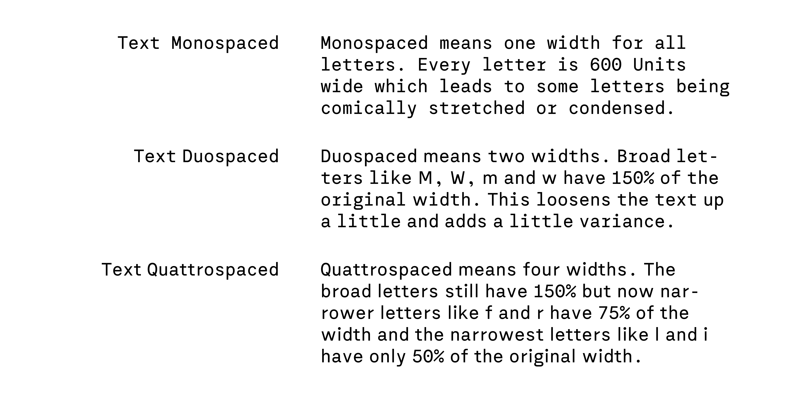
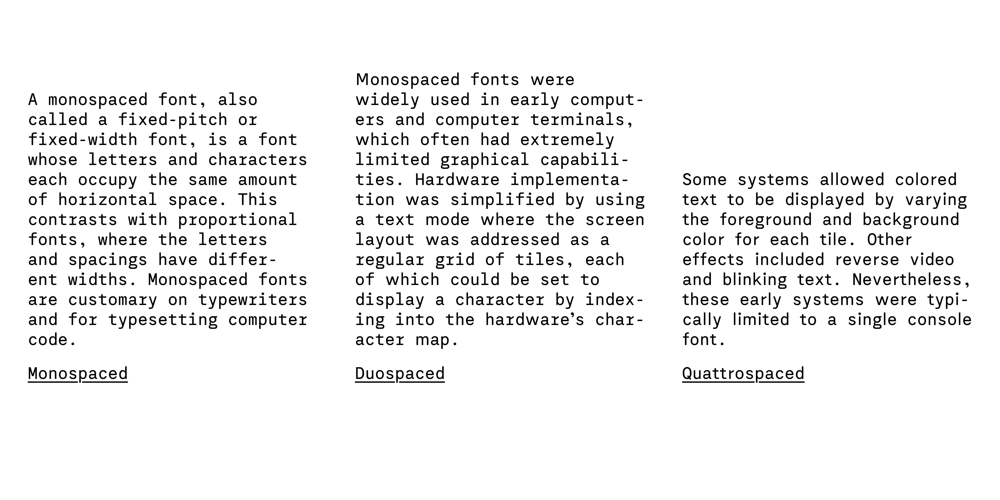

Text was part of my diploma at HBKsaar in 2019. It’s a monospaced with an accompanying version with an underline.

Later two Stylistic Sets were added that introduced some glyphs with different widths which lead to a more proportional look while still being very rigid about character widths.

